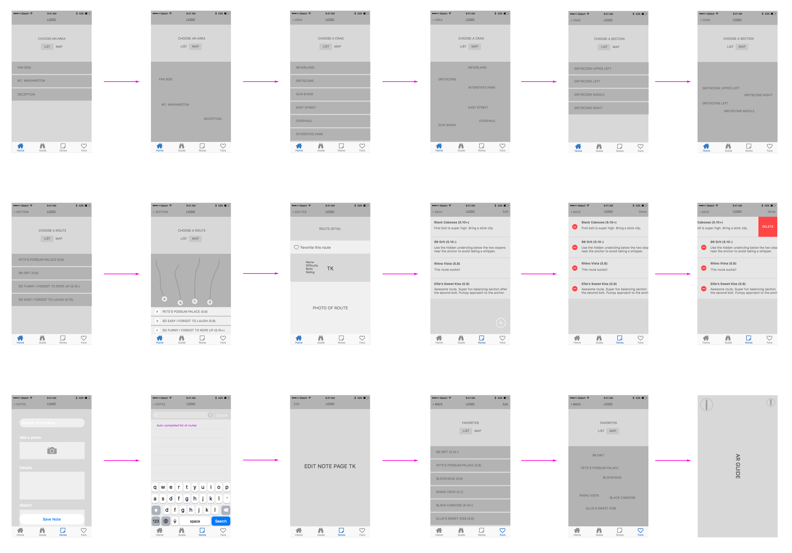

In the rock climbing community, guidebooks are paperback companions used by climbers to find routes in a specific area. Guidebooks are treasured within climbing culture, providing a wealth of information ranging from route details, to local stories and traditions, to directions, to various beta (tips/info). There are a few digital guidebooks that exist, but many climbers, including myself, find them to be confusing, difficult to navigate, and somewhat unreliable.
My goal for this app is to take advantage of features that exist in the digital world to create an uncomplicated, intimate, and valuable experience for intermediate to advanced climbers.
Getting Started
In the rock climbing community, guidebooks are paperback companions used by climbers to find routes in a specific area. Guidebooks are treasured within climbing culture, providing a wealth of information ranging from route details, to local stories and traditions, to directions, to various beta (tips/info). There are a few digital guidebooks that exist, but many climbers, including myself, find them to be confusing, difficult to navigate, and somewhat unreliable.
My goal for this app is to take advantage of features that exist in the digital world to create an uncomplicated, intimate, and valuable experience for intermediate to advanced climbers.
Some guidebooks focus on regions and states, but I wanted to start small by focusing on a confined area that I was familiar with. This approach provided me w/ a built in hierarchy of information (Area > Crag > Section > Routes) and allowed me to focus solely on the interaction design. The kind of scenarios I’m optimizing for are:
a climber at home wants to check out the area before heading out, perhaps getting a mental model of the layout and planning their day.
a climber is at the climbing area and is figuring out where to go.
a climber is standing at the wall, about to climb, and uses the app as a reference for how much gear to bring with them.
Sketches & Wireframes
I started by writing a list of things I would find useful in a guidebook, also using an existing paperback as a reference.
I then took a stab at the navigation, but it felt scattered and excessive. The interactions needed to be trimmed down, and there needed to be a task associated with each screen.
Heeding the advice of Ryan Singer’s shorthand for designing UI flows, I removed the distracting elements and focused more on giving the user something to do with each view. In this case, I went with “Choose a section, area, etc.”.
I was on the right track, but things still felt a bit scattered, and I was confusing things like “section” with “area”. The navigation I landed on was Area > Crag > Section > Route:
Area: At Exit 38, there are three different areas to hike out to.
Crag: In each area, there are multiple crags, or rock faces.
Section: Each crag (think rock wall) has multiple sections (left, right, middle, etc.)
Route: Within each section, there are multiple routes to climb.
After putting together some loose wireframes, I mocked up a few screens from this flow to get a sense of how the content filled up the mobile view.
Not much was really working here. The home screen images didn't tell me anything about the areas they call out, and the color contrast for the bottom menu bar is too low. The area map was just plain boring and I knew it could be better. Looking back, I should have spent more time in the wireframing stage before getting lost in the visual details.
The crag map doesn't really help me if I don't know where I am in relation to them, so enabling location would be really helpful here. I thought it might also be helpful if the sections were broken up into actual sections, similar to an area chart.
There's also the issue of having serious alerts, such as "Corroded anchors: DO NOT CLIMB!", behind an interaction. Some climbers may ignore the hazard sign and fail to check the alert. I considered removing routes with issues from the app altogether, but I ran into some issues:
What if there is a climber that is familiar with the routes? She decides to climb the one that is dangerous, without opening the app, and puts herself in a potentially life-threatening situation.
Same for a climber who isn't familiar with the routes, doesn't have the app at all, but he sees anchors at the top and decides to give it a shot.
I went back to wireframes so as not to get lost in the visual details again. In this iteration I took a stab at the notes, search, favorites, and augmented reality features I had on my wish list.

I didn’t like that the “delete note” feature put the interface into a mode, whereas a “swipe left” interaction would cut the number of gestures in half (“Swipe > Delete” instead of “Edit > Icon > Delete > Done”). Removing the mode would also prevent any mode errors from taking place.
I created a prototype with these wireframes and set off to my local climbing gym. I tested the prototype on some fellow climbers and received a lot of useful feedback:
The personal notes are great, but can I read other people’s notes?
The binocular icon for the virtual guide doesn’t make sense
Is there a route description?
How exposed is this crag during the summer?
With this feedback, I eagerly cranked out my next set of wireframes.
This iteration was definitely going down the right track, but it was clear to me that there was a lack of focus. I was trying to make every "wish list" feature work in the first version, instead of concentrating on the core elements of the UI. I ultimately decided to reel things in and focus on key features such as Routes, Notes, and Favorites, and to roll out additional features in subsequent versions.
Version One
For the first version, I decided to put certain features on the backburner and focus on a “read-only” guidebook. Focusing on the primary interactions, getting a pattern library dialed, and keeping basics like “Notes” and “Favorites” was a great starting point. This allows me to focus on the basic goals of the app while keeping it uncluttered. My main goals for this app were consistency (both interaction and visual), focus, and simplicity.
While my goal as a user might be to read about certain routes, I didn’t want to assume this was everyone’s goal. Throughout the app, I made sure that all information was accessible, prominent, and pointed clearly to a potential user goal. I did this by:
having tabs for Routes, Notes, and Favorites
making actions easily reversible, such as back arrows to the last screen a user was on, as well as a “sticky” tab navigation.
allowing users to quickly funnel down to what their looking for, with only four main screens (Area, Crag, Section, Route).
In the former iterations, there was empty real estate on every screen behind the “Choose” task and list/map view. Instead of having users toggle between these two views, it would be more efficient to show both views at the same time and have certain gestures make one view more dominant than the other.
To keep things clean and focused, I wanted the app to have a clear visual hierarchy. Designing with the Mind in Mind explains that “one of the most important goals in structuring information is to have an arrangement of information that:
breaks the information into distinct sections, and breaks large sections into subsections
labels each section and subsection prominently and in such a way as to clearly identify its content
presents the sections and subsections as a hierarchy, with higher level sections presented more strongly than lower level ones.”
This allows users to mentally sift out irrelevant information and quickly arrive at their goal.
Version Two
In version two, I plan to include the following features:
Downloadable topos: This is an issue I need to research more, but a couple beneficial use cases I can think of are:
a user doesn’t have cellular data on their phone, so they download the topos over a wifi connection before they head out to climb.
a user wants to preserve their battery life so they use “airplane mode” while they’re out climbing.
lack of connection in the mountains
Search: adding this additional tab would allow users to search for a particular area, crag, section, or route without having to funnel down the main interaction. For example, if I wanted to climb “Devil’s Peak” but didn’t remember which crag or area it was in, I could simply search for “Devil’s Peak” as soon as I opened the app. The search results would autocomplete as I typed.
“Add photos” to notes: this will require the use of app permissions for both the camera and photo album on the device.
GPS locator: this will also require app permissions for location on the device. This feature would allow the user to see where they are in relation to an area or crag in map view. There are many ways this feature could be helpful.
Version 3 (and beyond)
In version three, I plan to include the following features:
Comments: as it stands, the app allows users to create their own personal notes on routes, but being able to read beta from other climbers could prove tremendously helpful. For example, I’m about to climb a route that has a very loose boulder about 30 feet up, and before I climb it I read a comment that says “Watch out for the super loose boulder about 30 feet up!” Having access to this kind of information could save my and, most likely, my belayers life. There could also be a sub-feature that allows users to “upvote” certain comments that are helpful, such as a life-threatening one like this.
Reviews: During a user test I performed on some early wireframes, some fellow climbers mentioned that it would be helpful to know if certain routes were crimpy (tiny finger holds), static, dynamic, run out (bolts far apart), etc. This information could also fall under the “Comments” feature, but it would be great to have simple, fun icons showing how other climbers “rated this route”.
Report Issues: related to the life-threatening scenario in “Comments”, it would be useful to allow climbers to report issues with routes, bolts, anchors, etc., through some sort of "report issue" button.
Augmented reality guide: alright, maybe this will be in version four, but I already have some great ideas for incorporating AR into the app. This is something I need to research more, but this would be really helpful in multiple situations:
hiking down a path and coming to a fork in the road (most guidebooks give you hiking instructions, like “Turn right at the large black rock”, but what if that rock isn’t there anymore? Or that tree was burned down?
standing in front of a wall that you see bolts on, but aren’t quite sure where you are on the map. A GPS locator would be helpful, like on Google Maps, but having an AR view would provide helpful information such as number of bolts, length of route, tips, etc.